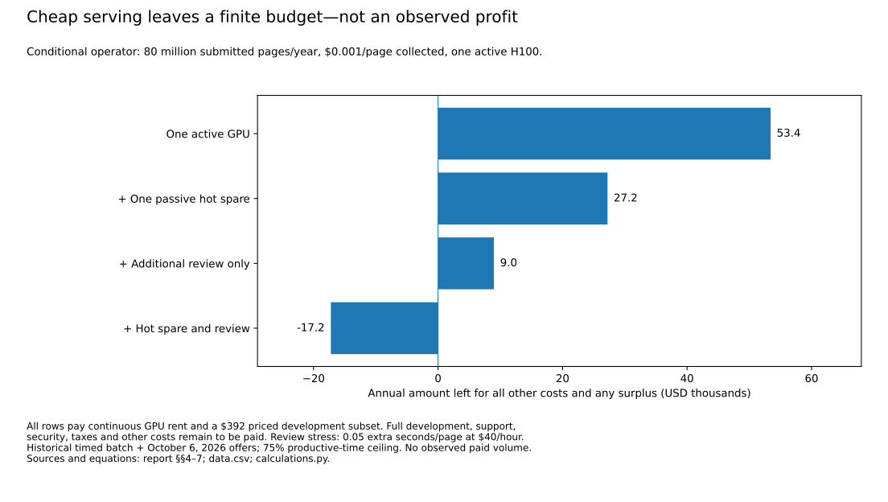
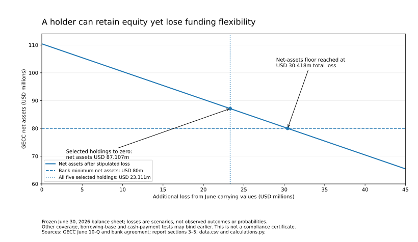
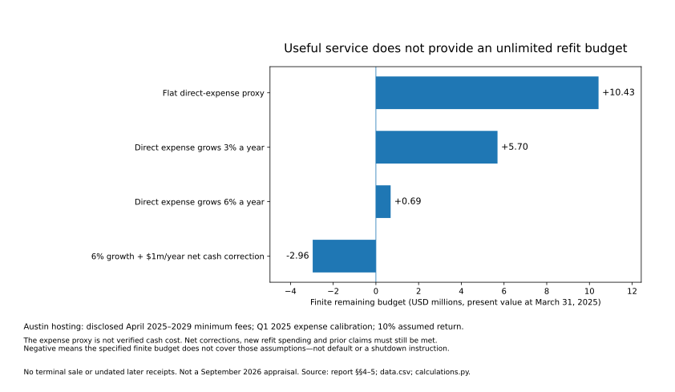
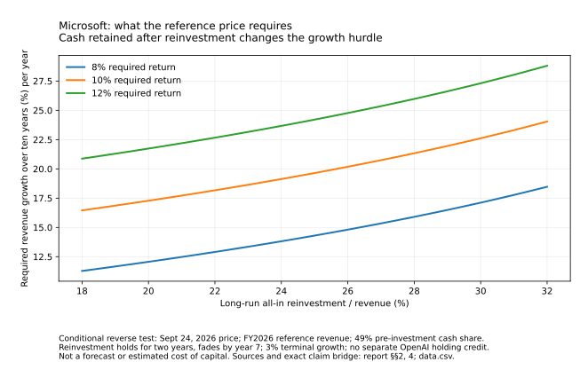

Is AI a Bubble?
Investment returns
Useful output must earn back capital. Investors must also earn back the price they paid for ownership.
Evidence dates and measurement boundaries
Which return are you trying to establish?
Cash realized by a seller is a third, distinct result. It can be genuine even when the operating business still needs capital, and it can coexist with a poor later entry price. Start with the documented recipient and remaining claim.
Recovering the original investment and earning a return at today’s ownership price are different tests. The first includes the full historical capital. The second values remaining cash and obligations across the whole claim. Neither gets a free terminal asset or free funding.
A service can cover its machine bill without covering its whole business. A successful business can repay a loan without recovering the original full investment, and a later buyer can still pay too much for its shares. The new efficiency test quantifies room for all remaining costs; it does not replace the earlier owner-cash or capital-recovery models.
An earlier investor can succeed while a later investor earns too little
That is a difference in entry price, rights and cash allocation—not evidence that the earlier receipt was unreal. The transaction investigation supplies completed company funding, named seller consideration and a repaid bridge. These strengthen the evidence for genuine realization and useful capital recycling. They do not supply complete recipient IRRs or validate what continuing holders paid. The connected transaction conclusion.
Completed offering · amounts in U.S. dollars
Most of the IPO cash went to the company
Scroll horizontally on a narrow screen to inspect the complete figure.
The three co-founder groups’ reported gross consideration across the December 2023 and October 2024 tenders totals $487.855191m. These are affiliated-group sale receipts, not three individuals’ personal after-tax gains or money raised by CoreWeave. Their acquisition bases, taxes and complete costs are missing. The tenders and the March 2025 IPO are separate events, not receipts to add inside the IPO total. Recipient table and cash perimeter.
A narrower realized spread is supportable for Kristen McVeety’s December 2023 lot: $1,293,356 consideration less the included $45,664 exercise remittance leaves $1,247,692 before other costs and tax. That identifies a real deduction but not the full option basis or IRR. Her separately allocated IPO proceeds, and other named sellers’ allocations, remain inside the aggregate seller total—not additional receipts. The identified deduction and different lots.
The remaining share’s rights can change the allocation
Conditional historical allocation · not a current claim
Same business-sale budget, different cash rights
Scroll horizontally on a narrow screen to inspect the complete figure.
The put survived conversion but actually terminated in September 2025. June’s accounting view that redemption was no longer probable was not itself cancellation. The frozen-capital comparison changes only the historical right; it is neither a reconstruction of September capital nor a current valuation. The separate Put Note route would credit proceeds from the escrowed shares, so a holder does not receive full note repayment plus an unrestricted second sale of those same shares. Actual termination and the legal conditions.
Fidelity-affiliated entities’ disclosed December 2023 acquisition cost was $310,000,057 for 20,009,040 shares, approximately $15.493 each. This is a documented purchase, not an observed exit. At the low illustrated outcome, a hypothetically retained specified lot has a positive nominal return while a $40 IPO buyer has a negative one. At the higher illustrated value, both can gain. Fees, tax, later trading, fund distributions and current dilution remain outside that calculation. All three allocation cases and their domain.
Funding can dilute an ownership percentage without destroying value per share. A fairly priced identical new claim brings a corresponding resource; costs, unequal rights or poor use of the money can change the result. The identity does not establish that the observed IPO price was fair. Historical beneficial counts, multiple votes and lock-ups also do not give a current liquid holding. What the offering did not remove.
For the debt-funded contrast, the old bridge’s actual repayment retires its claim, while reserves, new secured notes, continuing credits and completion duties remain. The conditional parent-resource remainder is not an owner profit or dividend. The earlier completion, buyer and service-cost tests still govern what operations must deliver. Completed capital release and surviving obligations.
A distribution today changes what must be financed tomorrow
Positive service cash, repayment of a particular loan, recovery of original investment and return on an ownership price are different results. The connected CoreWeave–Core Scientific case makes another distinction concrete: cash paid to the parent no longer remains in the borrower to retire its debt. Parent-accessible financing is not automatically earned profit or a public-shareholder dividend. The connected investigation.
Conditional allocation · not a cash forecast
Cash paid out cannot also retire the debt
Scroll horizontally on a narrow screen to inspect the full figure.
The source mix matters. The $350.808 million residual combines the issuer’s April operating illustration with May’s executed 7.75% debt and the June filing’s assumed November 2029 amortization start. It precedes additional omitted uses and legal distribution restrictions. The $344.8 million opening resource and $331 million early-2031 cash are assumptions, not verified future balances. Sources, dates and the payment calendar.
A finite refinancing supports a serious favorable outcome: the retained-cash requirement can be funded by about $1.847 billion gross, with a 2% fee and four annual payments of roughly $582.642 million at 10%. Assumed annual cash of $600 million after every non-debt use covers those payments. The resulting $53.923 million net funding headroom is not enough to finance the entire earlier residual payout on unchanged terms. It is an economic comparison, not permission to distribute. The owner-payout and refinancing trade-off.
The cash assumption must bear the costs and service rights of the later term. It cannot extend Austin’s shorter contract for free, omit replacement, or import an application-provider gross margin. The adverse $450 million/12% path leaves a $470.487 million funding mismatch under the same term and fee. That is not expected loss or a share-price estimate.
This does not replace the earlier IREN or Microsoft requirements below. It strengthens their common discipline: a cash flow used to support one claim must still carry its costs and cannot also belong intact to another. A borrower can refinance productively while original owners earn too little; a successful early distribution does not validate the price a later investor pays. Updated whole-answer assessment.
Owner cash must survive the completion interval first
The earlier joint-cash test makes retained resources and future refinancing explicit assumptions. The completion investigation examines what can be consumed or restricted before that later model starts. It does not replace the 2031 calculation with a new observed opening balance. The upstream cash question.
Core Scientific’s matched customer-funded construction account supplies favorable evidence: collecting reimbursement before paying the matching vendors need not require an equal parent injection. A model that treats the liability alone as a loss overstates that burden. But paying before reimbursement creates a temporary bridge even when eventual collections match. Neither the receivable nor its later collection is unallocated profit. Timing versus ultimate cost.
Completion can lower the required reserve regime and open particular borrowing or distribution permissions. The completed/credits-remain comparison has $82.656m of modeled room at the first payment date, under the stated June-reference and zero-interim-net-cash conventions. That is not permission to distribute it. The construction minimum and full-formula zero-remaining-earnings cases instead require $107.094m and $315.825m; missing determinations and eligible-resource records prevent a compliance finding. All branches and the unclosed reconciliation.
IREN supplies the converse favorable mechanism: legitimate delivery finance can precede acceptance, including its qualifying 97% route and separate first-tranche advance exception. Excluding these would invent an excessive equity requirement. Escrow, spare inventory and parent-liquidity conditions still constrain what owners may use. The conditions that make early funding real.
If completion needs more sponsor capital or keeps it tied up longer, owner returns can weaken even while service fees survive. Timely delivery, valid funding and release of a support burden improve that path. The existing ownership, full-cost and continuation figures below retain their original assumptions and evidence dates; no permit budget or reserve requirement is inserted as an appraisal or loss.
A valuable project is not the whole share price
The IREN ownership test pairs the $46.15 September 24 price with 394.058648m August 14 shares: $18.186bn common equity. Adding June debt face and finance leases, and deducting unrestricted cash once, yields a $20.218bn operating-value requirement. This is a mixed-date diagnostic, not an exact September enterprise value.
Conditional ownership test · not appraised asset values
One contract does not explain the whole share price
On a narrow screen, scroll the figure horizontally.
A $1bn post-statement payment for already-budgeted construction reduces both cash and remaining cost by $1bn; it is not new equity upside while retaining old cash. An undrawn loan becomes cash plus debt when drawn. Prior costs and funding must not appear twice. June borrower accounts, distributions and remaining spending.
The favorable optional second cycle costs $4.3bn to renew and has no value after five further years. A negative incremental cycle can be declined where no obligation forces it. This differs from the earlier full-budget recovery test below: its $2.81bn/$3.42bn continuation requirements remain requirements, not assets to add to today’s value.
The equipment can pay back before the whole investment does
A disclosed IREN–Microsoft case now gives the recovery test a clearer capital boundary. The original Childress plan budgeted $5.8bn for equipment and ancillaries plus $2.8–3.2bn for 200 MW IT of facilities. Its approximately 85% project EBITDA estimate includes direct power, repairs, maintenance and site costs, but is not complete owner free cash flow. Budgets and margins remain company estimates. Original cost perimeter and source notes.
Cost perimeter · not an actual return
One project. Two cost boundaries.
On a narrow screen, scroll the figure horizontally.
The model synchronizes four phases into 60 equal service months, places capital and the contractual advance at the modeled start, and credits that advance against months 25–60. It conserves the $9.664199424bn tranche-fee total. Actual payment dates, calendar-hour billing, taxes and as-built costs are not observed; this is not a realized project IRR.
| Capital / cash-cost case | First-term NPV before end value | Net value required at year five |
|---|---|---|
| $5.8bn equipment only / 85% project measure | +$1.258bn | None within this restricted perimeter |
| $8.8bn combined midpoint / 85% project measure | −$1.742bn | $2.806bn |
| $8.8bn combined midpoint / 80% cash sensitivity | −$2.125bn | $3.423bn |
| $8.8bn combined midpoint / 75% cash sensitivity | −$2.508bn | $4.039bn |
The 80% and 75% cases add five or ten percentage points of costs outside the project measure, applied to original fees. Those are sensitivities, not measured company margins. Routine power and maintenance are already included and are not deducted twice. Net end value means sale proceeds after transition/realization costs, or the equivalent value of continuing operations, before allocating between creditors and equity. The model does not sell the assets and then reuse them.
The result does not say the site is worthless or already impaired. It says that a continuing asset must do additional economic work before the whole initial investment clears the stipulated hurdle. The equipment-only cash payback in month 31 omits the facility; it is also not the company’s approximately two-year claim for a different set of newer three-year contracts. Complete assumptions, sensitivity figure and reproducible calculation →
The earlier general recovery illustration remains a different test
The following $14.117bn example explains how life, timing and cash margins affect recovery. It remains useful, but it is not the newly documented IREN cost perimeter or an actual CoreWeave cohort valuation.
A gross margin deducts some direct costs. Operating profit includes more expenses and accounting depreciation. Operating cash flow adjusts noncash items and working capital but does not deduct all investment. None alone tells us whether a particular investment has recovered its capital and earned a return for the risk taken.
The whole-system assessment uses $14.117bn—CoreWeave’s disclosed first-half cash-investment scale—to illustrate an investment cohort. It does not assert that all of that mixed spending entered service together or that it describes a new GPU-only fleet. The public evidence does not supply the cohort-specific prices, utilization, maintenance and asset mix needed to underwrite the actual investment. Disclosed investment input.
Conditional scenario · not company targets
A longer earning life lowers the annual revenue hurdle
Scroll the figure sideways to see the full diagram.
At four operating years and an assumed 50% complete pre-financing cash margin, the required level annual revenue is $8.907bn. Approximately $4.454bn of annual cash then has a present value equal to the $14.117bn investment at a 10% hurdle. This is a conditional break-even calculation including return on capital, not simply cost divided by years.
The margin means cash after operating costs, tax and maintenance, before financing payments. It is not the reported EBITDA margin. Interest is not deducted a second time when the discount rate already represents the all-capital hurdle. New investment needed after the chosen earning life is not supplied free by the model.
Price, cost, delay and useful life decide the outcome
| Assumptions | Required revenue |
|---|---|
| 4 years; 40% cash margin | 11.134bn per year |
| 4 years; 50% cash margin | 8.907bn per year |
| 4 years; 60% cash margin | 7.423bn per year |
| 4 operating years; 50%; receipts delayed one year | 9.798bn per operating year |
| 4 years; 50%; revenue falls 10% each year | 10.232bn in the first year |
| 4 years; 50%; revenue falls 20% each year | 11.760bn in the first year |
These are different scenarios, not a measured revenue shortfall. Delay also can create construction overruns, financing needs or loss of competitive earning time that this simple calculation does not include. A longer building life cannot be assumed to extend an accelerator’s useful earning life. Assumptions, complete table and reproducible equations.
The demand study adds a cost-sensitive test. With revenue normalized to 100, assumed variable cash costs of 35 and fixed costs of 15, cash is 50. A 20% price cut and 25% volume increase restore revenue to 100, but variable costs rise to 43.75 and cash falls to 41.25. At the inherited four-year investment scale, the scenario has a −$2.470bn net present value. It is not an actual project loss.
A 20% fall in unit variable costs restores that cash. Without the cost improvement, the assumed structure needs 44.4% more volume—not 25%—to restore original cash. Extra work must fit available capacity; expansion capital is not included. The stress is not calibrated to a mix-sensitive token-price series. See the revenue-versus-cash visual and complete sensitivity table.
Stronger commercial capture does not supply every required margin
The payment-and-capture evidence strengthens a genuine favorable path: customers can keep paying while providers retain some of the improvement. Freshworks supplies an observed full-expense operating-profit comparison; Meta supplies a provider-reported experiment illustrating monetization inside an existing advertising service. Competition need not transfer every gain away from suppliers. Commercial case and its limits.
The size of the retained gain still matters. Freshworks' approximately 84.8% gross margin became a 2.55% operating margin in Q2 2026. A $11.432 million stock-compensation expense decline is already included in its $14.716 million profit improvement and is not evidence of an equivalent AI productivity saving. The first-half operating result remained a loss. Full expense structure.
At unchanged total costs, a 2.55% revenue decline would exhaust that quarterly operating profit; proportional delivery costs with fixed operating expenses give a 3.01% threshold. Those are diagnostics of the observed expense envelope—not forecasts, cash-default boundaries or the return on new capital. Positive cash generation remains important, but adjusted and unadjusted cash must be distinguished. Cash and expense-envelope tests.
The ownership models below therefore remain conditional. Neither an application gross margin nor a broad advertising profit is substituted for a frontier lab's assumed complete cash margin. The current Microsoft requirement remains revenue growth under specified cash/reinvestment assumptions, not a new cash-growth forecast. IREN's required continuation and other-portfolio values remain requirements, not appraisals or observed losses.
Cheap serving creates a budget—not a measured business return
The document-service test asks how much stipulated receipt remains after identified uses. Its one-year starting case assumes 80 million billable inputs, $0.001 per input and full collection. One continuously rented active H100 at the inspected $2.99/hour costs $26,192.40; a $391.90 priced development subset is charged. The resulting $53,415.70 must still finance every uncharged cost and any surplus. Neither real customers at that price nor a complete development allocation has been observed. Complete definition and assumptions.
Conditional annual budget · not a margin or a forecast
All the uncounted costs must still fit inside the bar
Scroll within the figure on a narrow screen to inspect the full chart.

The subset prices one reported fine-tune and a particular synthetic-data estimate, with repetition once per modeled year. It leaves the larger training/experimentation, data, human work, support, security, taxes and other functions incomplete. Released weights can shift who pays for competitive updates; they do not make development cost nobody anything. The rent already pays the operator’s capacity supplier, so charging the supplier’s GPU purchase again would duplicate capital. Extra operator-owned assets remain separate. Development, rental and renewal boundaries.
A serious shared-gain case remains: at unchanged paid capacity and the same limited priced subset, assumed volume rising from 64m to 80m inputs with a 10% price reduction leaves $8,000 more for remaining costs. Full surplus rises only if extra unpriced costs fit inside that increment. A 30% price cut instead crosses the one-active-machine limit when trying merely to preserve revenue. Paying for another active machine raises the required volume further. These are feasible or constrained combinations, not estimated demand elasticities. The favorable and erosion paths.
The earlier frontier 20–30% complete owner-cash assumptions are therefore not replaced by this budget as a fraction of revenue. Useful specialized work can be inexpensive while an application, developer or capital owner captures too little to justify its own price. What changes in the whole assessment.
A good purchase does not determine the return farther upstream
The buyer investigation adds a favorable reason for continued purchasing: useful service can expand, or an expensive external process can be replaced. It does not assign the buyer’s entire gain to an application, model or infrastructure owner. The customer-side update to the whole answer.
Two counterfactuals · not an observed return or payroll saving
A 14% output gain answers two different budget questions
Scroll horizontally on a narrow screen to inspect the complete figure.
The two thresholds use the signed historical fee and an assumed sustained, attributable 14% uplift, not a measured payroll reduction. With the assumed £12,000 extra annual burden they become £428,571 and £488,571; a 7% uplift raises them further. Neither the actual comparable budget nor complete buyer costs are established. A positive result describes a sufficient condition under those assumptions, not a realized return or permission to eliminate staff. Assumptions, alternative outcomes and renewal costs.
Klarna’s attributed $2.59m external-spend reduction for first-quarter 2024 versus first-quarter 2023 similarly gives an envelope for uncounted internal costs, not a frontier-provider margin. At an assumed $2m additional burden the claim retains $0.59m; at $3m it has a $0.41m mismatch. Costs already deducted in management’s estimate must not be charged twice. Comparable campaign quality, commercial outcomes and the supplier’s own costs remain unmeasured. Full-cost envelope and accounting limits.
A rational buyer and a disappointing investment can coexist. Cheaper replacement can support a durable sale while leaving much of the benefit with the buyer or displacing another supplier. The older full-capital, remaining-owner-cash and debt-payment models below are not recalibrated using these buyer claims. No council or Klarna workload is assigned to the earlier financed halls without a disclosed link. Continuity with the earlier investigations.
Visual explanation
The buyer need not keep all the benefit for the purchase to improve
Scroll the figure horizontally to inspect all labels.
Cheaper service can help buyers without rescuing every supplier
Lower unit costs can make more useful tasks worth buying. Competition can also pass savings to customers, and customers can change their model mix or supplier without stopping AI use. The crucial conjunction is adequate paid volume, attainable prices, controlled all-in costs and sufficient duration. More use by itself is not enough.
The office buyer example shows that a moderate license cost can be justified by a fraction of saved-time value. The support example shows that a billable outcome need not eliminate an equivalent human expense. Good customer economics support willingness to pay; they do not allocate every dollar of customer surplus to the model or infrastructure provider. Office buyer hurdle; support buyer hurdle.
Power and delivery matter to that duration. The IEA’s April 2026 outlook estimated global data-center electricity use at 485 TWh in 2025 and projected 950 TWh in 2030. A forecast of energy demand is not delivered capacity or cash available for a particular project. Grid and construction constraints can restrain excess capacity while also delaying receipts. IEA scope and forecast.
Retail pricing does not automatically reprice a fixed cloud contract. A price decline may first reduce the contracted buyer’s margin rather than the infrastructure lender’s current receipts. The ability and obligation to keep paying—and the provider’s delivery performance—then matter. CoreWeave also reported higher annualized capacity pricing on short three-to-six-month contracts; that issuer claim cannot be extended across an entire fleet or asset life. Dated short-contract statement; contrasting contract horizons.
Creditors can be paid while the original investment disappoints
A negative investment net present value is not a dollar estimate of lender loss. An all-capital recovery model asks whether cash compensates for the full investment and required return. A debt-payment test asks whether the particular borrower pays the particular obligations on their dates. The financing structure decides which claim absorbs the difference.
DDTL 4.0 makes this distinction concrete. DBRS identifies Meta’s take-or-pay contract and expects it to fund full amortization without refinancing. Meta may honor reserved-capacity payments even with disappointing utilization; the operator may pay lenders but retain a thin equity residual. A project rating therefore does not certify Meta’s AI investment return, the operator’s equity return, or an attractive share price. The rating is also a projection, not current compliance.
Sources: Morningstar DBRS initial credit analysis; DDTL 4.0 executed credit agreement.
Liquidation is a backup case, not that expected repayment route. Against $2.837bn of June principal and approximately $3.3bn of noncurrent book collateral, assumed 5% realization costs imply required gross realizations of about 85.6% of book if all $155m of current collateral is recovered as cash, or 90.5% with none. Those cash outcomes and costs are assumptions, with prior-ranking and competing swap claims set to zero. They are not expected losses or market prices.
The threshold changes with principal amortization, drawings, depreciation, transfer costs, reserves consumed and claim priority. It does not value collateral at final maturity and must not be substituted for the $14.117bn hypothetical cohort used above. The collection, reserve and enforcement calculations keep those two models separate.
An investor can realize a gain—and still retain an exposed claim
GECC’s reported $9.5 million cumulative cash distributions against a $6 million original CoreWeave-related equity investment strengthen the favorable financial case. Some value has reached an investor in cash. The $3.5 million excess is before the costs and timing of holding it; it is not an internal rate of return or proof that all distributions came from the borrower’s operating surplus. The remaining fund interest can still fall in value, and the previously received cash may have been spent or distributed. Past realization versus the remaining claim.
The holder’s ability to absorb a future loss is a third question, separate from that historical gain and from whether a new buyer pays a good price. GECC’s June net assets were $110.418 million. The $23.311 million selected holdings are meaningful relative to that capital, but do not represent all of the holder’s possible AI exposure. The selected balance-sheet perimeter.
Frozen June balance sheet · conditional losses
One covenant can bind while substantial equity remains
Scroll horizontally when needed to inspect the complete figure.

What the favorable result establishes: in the frozen-June test, differentiated marks of 20% on secured-loan fair values, 40% on the bond and 60% on the fund interest cause $7.516 million loss and leave $102.902 million net assets. A separate assumed net workout—80% of secured face, 40% of bond face and zero retained fund value—leaves $99.623 million. Both remain above the 150% level under the two stated coverage conventions. They are conditional absorption cases, not estimated recoveries, observed losses or certified compliance. All scenarios, assumptions and denominators.
Why a full write-off is not an all-clear: loss of the selected holdings alone leaves $87.107 million net assets, $7.107 million above the single $80 million floor. Yet the reported-ratio-reproducing proxy gives 152.35% coverage, while the unadjusted-book sensitivity gives 149.62%. The face/carrying debt difference explains the gap in this reconciliation. Neither supplies the missing official computation, and the borrowing base or cash payments could constrain the holder earlier. Do not turn the proxy into a compliance certificate.
With an additional stipulated $10 million loss elsewhere, net assets fall to $77.107 million—below that bank floor, not zero. Selling assets at carrying value and repaying $12.186 million repairs the 150% proxy but leaves those net assets unchanged. Selling at a hypothetical 10% discount needs more book assets and creates another $1.741 million loss. The algebra does not establish permission to sell collateral, repay any selected note or execute a restructuring. Why reducing debt cannot itself replace lost capital.
A poor return on original infrastructure, a markdown in the security held, a holder funding constraint and a loss for its bank are not identical outcomes. The earlier recovery and ownership models remain unchanged. Older capacity’s usefulness does not provide a recovery percentage for these loans; that requires the specific assets, rights, costs and claims. Continuity with the dated research.
Time, replacement and a usable second life decide the remaining recovery
The service contract preserves aggregate fees by extending service end dates after a delayed start. The timing test therefore shifts all 60 service months: at the $8.8bn midpoint and 85% project measure, a twelve-month delay raises required net value from $2.806bn at year five to $3.912bn at year six. If the advance is delayed too, the requirement rises to $4.224bn. These are assumed timing cases before extra construction, idle-equipment, penalty or financing costs—not findings of a contractual breach. The extended-term timeline.
Another route is to keep the facility and buy a new equipment generation. The finite second-cycle case charges $5.8bn for replacement equipment plus $0.2bn for retrofit at year five, then five years of operations with no final sale value or new customer advance. Its $20m per IT MW-year price scale comes from a dated claim about different, newer contracts; using it five years later is explicitly an assumption, not a forecast.
With assumed full-use annual variable costs of $1bn, fixed costs of $0.2bn and an 80%-cash first term, 90% paid utilization at that price produces +$0.299bn whole ten-year NPV. At 65% paid utilization and a 20% lower price it produces −$2.825bn, despite still generating $1.23bn of annual operating cash. Both use a 10% hurdle.
At the selected unchanged price/cost scale the whole investment breaks even at 85.95% paid utilization. With a 20% price reduction and unchanged unit costs it would require 117.21%, beyond the fixed cohort’s capacity. Efficiency, cheaper replacement or a better service mix can change that boundary; unbounded extra volume cannot be assumed. Follow the replacement arithmetic and limits →
Facility-only continuation is a different business. The required fifteen-year net annual facility cash is about $353m in the 85% first-term case or $431m in the 80% case, with no extra initial tail capital. Those are reverse tests, not observed rents. Core Scientific’s gross billing-MW revenue cannot be used as a matched net IT-MW rent for Childress. Why the hosting comparison cannot supply an appraisal.
Evidence for keeping the old service is stronger; its dollar value is still conditional
Result type: a historical budget for additional costs, not an observed residual price. CoreWeave’s reported A100 contract into 2029 makes immediate whole-generation replacement a less defensible universal assumption. It does not disclose the physical units’ age, achieved price or complete operating cash. The right comparison is a proposed refresh against the best feasible continued service, not replacement revenue in isolation.
Austin makes the cost boundary concrete. A previously used facility found a hosting customer, but the operator retained a headlease obligation. Its March 2025 customer schedule and expense record permit a finite test through 2029. Holding annualized direct expense at $21.812m, using year-end timing and a 10% hurdle, leaves $10.427m of present-value budget; expense growth of 3% leaves $5.695m. The historical model was assembled using amended accounts inspected in 2026. Sources, formula and dates.
Conditional historical cost budget · not an appraisal
How much room remains for the unmeasured costs?
Scroll horizontally to read the complete drawing.


The signed annual cash-cost correction bridges actual rent payments, noncash compensation, working capital, tax, corporate support and maintenance not captured by the expense convention. At 3% expense growth, about $1.561m/year of net correction would exhaust the finite budget with no extra upfront cost. This is a limit to test, not evidence that actual omitted costs fit beneath it.
The $33.747m of undated later fees and their costs remain outside the model—not worthless. Rent already enters expenses and is not deducted again. A negative finite result is not a default or shutdown instruction; stopping may leave obligations. Positive room is not freely transferable equity cash.
The original $2.81bn/$3.42bn Childress end-value requirements and the later $16.88bn other-portfolio requirement remain what they were: conditional requirements for different claims and dates. The Austin budget is neither their appraisal nor an amount to multiply by a capacity ratio. Compare the inherited scenarios without changing their meaning.
A falling investment share needs a funding explanation
The ownership-price tests identify what revenue, cash capture and continuing reinvestment would support the price. The payer analysis asks whether the operating and payment budget can support that path. A reduction in economic investment intensity is not the same thing as an immediate reduction in lease cash, and neither is proof that already contracted purchases can be cancelled. Cash payments versus economic investment
Microsoft’s selected funding resource is $73.043bn after excluding the identified short-term restriction. The earlier valuation credited $76.843bn permissively. Its 19.64% required revenue-growth result remains a dated calculation, not a newly revised cash-growth forecast or a measurement of current value. A revised valuation would have to update the resource treatment, claim bridge and future investment path consistently—not subtract a commitment pile from its headline result. Restriction and ownership-model continuity
There is a serious favorable path: faster cash growth than investment can preserve payment capacity. But capital that was leased still requires payments, component receivables are not collected cash, and replacement needs do not disappear with an accounting-life change. A resource ceiling may require operating-cost overlap or contract reductions that the available disclosures do not establish. The funding-capacity boundary
Meta’s continuation test makes duration visible: a workable half-year does not demonstrate that another year at the assumed high capital bill can be funded without further growth, adjustment or finance. A modeled shortfall is neither a measured loss nor insolvency. It is evidence that the selected cash, investment and resource assumptions need a different combination. Matched-period and following-year cases
The inference is not that every protected investment is overpriced. A strong buyer can honor a poor purchase, a lender can receive repayment and an owner can still miss its hurdle. Conversely, growing cash and productive completed assets can make a demanding price supportable. The original IREN continuation requirements and private funding/margin scenarios stay conditional. What the payer evidence changes
Microsoft: required revenue growth, not cash growth
The updated test separates revenue, pre-investment cash capture and economic reinvestment. Fiscal 2026 operating cash, less a stock-compensation allowance and a net-interest/tax adjustment, gives a $170.328bn pre-investment proxy. Charging $115.948bn cash investment and $24.608bn new finance-lease assets leaves $29.772bn. That is an analytical economic residual, not reported free cash flow. Exact cash and financial-claim bridge.
New leased assets count as investment and existing lease liabilities enter the claim bridge. Lease principal is not deducted again from this all-capital model. Stock compensation is charged once, not a second time through the same assumed dilution.
At the $497.93 September 24 price, paired with the July 23 share count, the model assumes 49% pre-investment cash share. Investment remains at 42.36% of revenue for two years, then fades to 20%, 25% or 30% by year seven and continues. It includes a separate $1.1bn commitment and 3% terminal cash growth.
| Required return | 20% long-run investment | 25% | 30% |
|---|---|---|---|
| 8% | 12.06% | 14.30% | 17.11% |
| 10% | 17.28% | 19.64% | 22.61% |
| 12% | 21.74% | 24.21% | 27.31% |
Conditional reverse valuation · not a forecast
Persistent reinvestment raises the required revenue growth
On a narrow screen, scroll the figure horizontally.

The central case has 72.9% of value after year ten. Giving no value after year twenty raises the required first-decade growth to 26.22%. This quantifies tail dependence, not an expected shutdown. A favorable persistent-growth/capital-normalization path can support the reference price; weaker growth plus sustained heavy investment can fall well short. Favorable and adverse cases, holding credits and limitations.
The 18 September foundation retains its separate feed-only reference and cash-residual growth illustration. Its 21.51% central cash-growth result is not a revenue-growth forecast and cannot be compared directly with the new 19.64% requirement as evidence of repricing.
Private ownership must fund the intervening business
The March OpenAI $852bn and May Anthropic $965bn post-money references are dated financing values, not September common-equity prices. The reported OpenAI 2026–30 cash-burn forecast is not a current financing hole obtained by subtracting announced commitments. Private rights and complete cash balances remain incompletely disclosed. Source and ownership boundaries.
For OpenAI, no distributions for five years plus an assumed additional $100bn pro-rata call in year three, at a 10% return and 3% later cash growth, requires $104.5bn annual owner cash beginning in year six. That means $348.4bn revenue at an assumed complete 30% cash margin, or $522.6bn at 20%. At a 15% hurdle the same call requires $221.5bn owner cash. The cash margins, funding and dates are scenarios, not company targets.
Delaying distribution, limiting the cash stream to fifteen years or issuing discounted new claims raises the requirement. A holder who does not contribute receives a smaller fraction instead; the model does not charge both participation cash and nonparticipation dilution for one raise. The earlier ten-year/no-interim-funding illustration remains dated in the foundation, not the current comprehensive test. Full funding, delay, finite-life and dilution calculations.
An offering changes funding—not the underlying return
Offering mechanics · no assumed amounts
“Money raised” can go to different recipients
Scroll the figure sideways to see the full diagram.
A later current report confirms $4.2bn of CoreWeave notes issued on 22 September 2026, including the exercised $0.5bn option. About $4.137bn net of purchaser discounts, less $566.2m capped-call cost, leaves $3.5708bn before other expenses. This is completed financing, not operating revenue or a complete September cash balance. The September 20 investigation correctly left the then-expected closing prospective. Closing disclosure.
CoreWeave’s closing demonstrates access to capital while adding debt, coupon and conversion exposure. About 42.92m shares is a hypothetical full-share conversion at initial terms, not shares already issued. A closed financing still does not establish the return earned on what it funds.
OpenAI and Anthropic confidential submissions and reported proposals are not priced or closed IPOs. September 25 reporting says SB Energy postponed formal marketing; no company-confirmed withdrawal or insolvency follows. The separate NVIDIA subscription still needs qualifying primary proceeds and closing; secondary exits do not meet the issuer-capital condition. All dated transaction stages and separate NVIDIA instruments.
What would make the return case stronger?
Ownership-specific evidence now matters alongside project recovery: actual remaining construction, net portfolio cash, Microsoft’s complete investment intensity, private funding and preference rights, and net primary proceeds. Current valuation tests and their ambiguities.
The decisive evidence is realized cash from identifiable delivered investments: service prices and paid utilization, complete operating costs, maintenance and replacement needs, productive life and actual amortization. A backlog helps only to the extent delivery occurs and the counterparty can pay. Investor pricing then needs a separate test against that cash and dilution.
Customer demand makes that outcome plausible in important settings. It has not established the assumed 50% cash margin or a four- to six-year cash stream for the investment cohort. Evidence that would strengthen or weaken the answer →
The next useful recovery evidence is net transferable service and equipment value: power and lease rights, assignment, downtime, replacement cost and the time needed to redeploy. Better evidence could support the favorable amortization case or reveal a weak enforcement backup. A chosen recovery percentage alone is not a finding. What remains unmeasured.
The new case narrows the missing inputs: final Horizon costs and dated payments; acceptance, credits and collections for all phases; complete cash operating costs; net values of transferable sites or clusters; and actual replacement-generation economics. None of those quantities is established by a reported short-term capacity price. Cohort-specific revision tests.
Older-service renewal fees, maintenance records, actual deployment ages and transferable rights can now constrain the keep-versus-refresh decision. They do not yet provide a universal tail margin or residual curve. What would sharpen that decision.